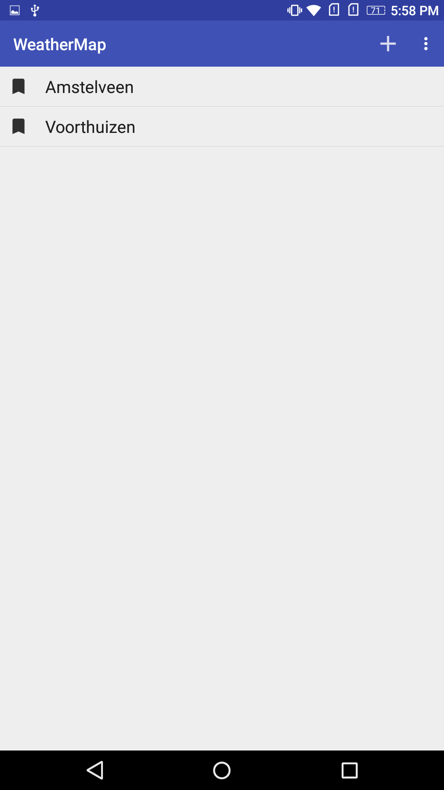
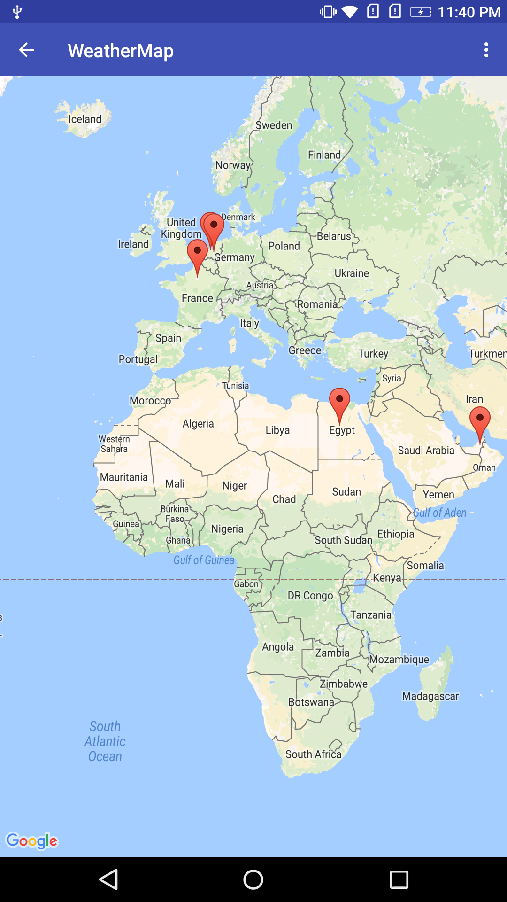
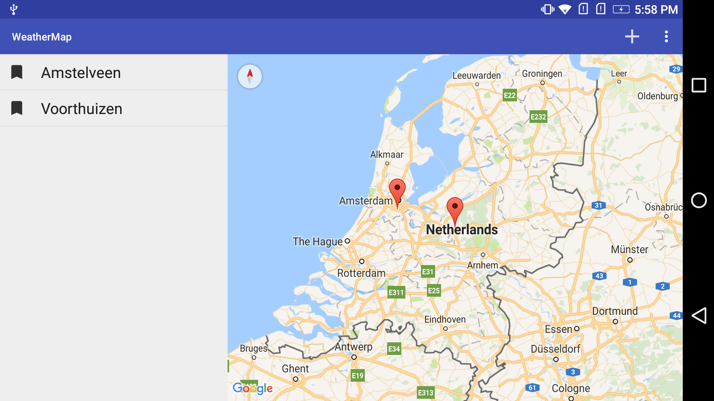

Welcome to Weather Map. I'm here to give you a look on weather in your favorite cities. In the home screen, you can see your favorite cities. Wait, you don't have any? ... let's add some. If you are using a phone, you can press on the "+" button to view the world's map, long press any location to add it. But if you are using a tablet, you can see the map on your home screen & you can add any city by long-click on it.
If you want to remove a city, simply press the bookmark icon beside it
  